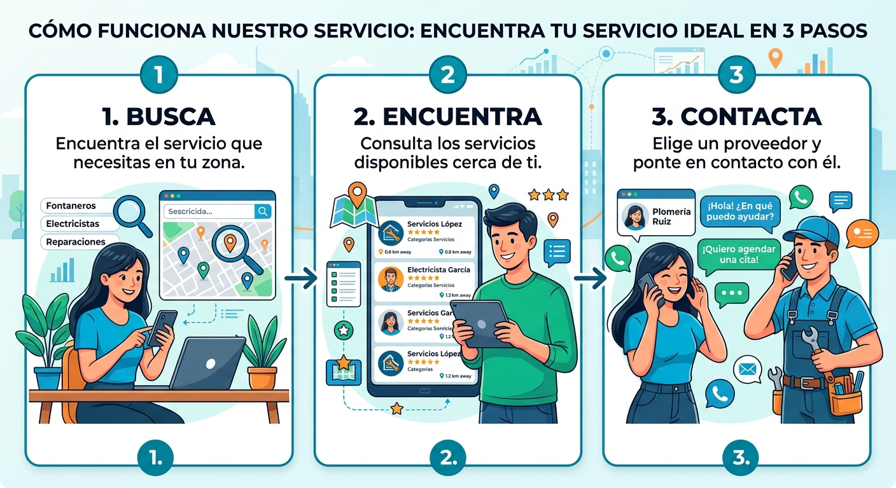

1. Busca
Encuentra el servicio que necesitas en tu zona.
Conectamos a las personas con los mejores servicios locales, de forma fácil, rápida y segura.

NOSOTROS
Haz es una plataforma tecnologica creada para conectar de forma aguil y transparante a personas que requieren asisstencia en el hogar o trabajo con expertos calificados en su comunidad.
seguridad prin: impulsamos la economia local drindando visibilidad a profecionales especialistas, electricistas plomeros, mecanicos y mas, eliminando intermediarios inecesario.
El algoritmo basado en geolocalizacionpara conectarte con profesionales a minutos de ti.
Conecta con especialistas verificados para tu hogar o empresa de manera directa.
SERVICIOS
Explora una amplia variedad de servicios en diferentes categorías.
CÓMO FUNCIONA
Encuentra el servicio que necesitas en tu zona.
Consulta los servicios disponibles cerca de ti.
Elige un proveedor y ponte en contacto con él.

¿OFRECES UN SERVICIO?
Si tienes un negocio o realizas algún servicio, únete a nuestra plataforma y permite que más personas puedan encontrar tus servicios.
BENEFICIOS